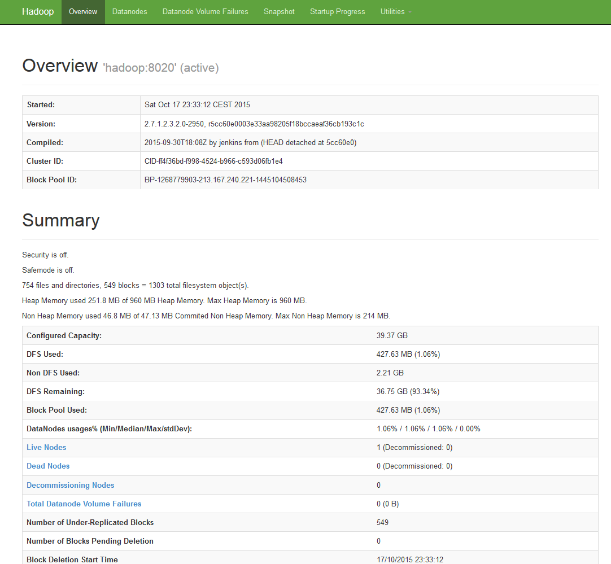
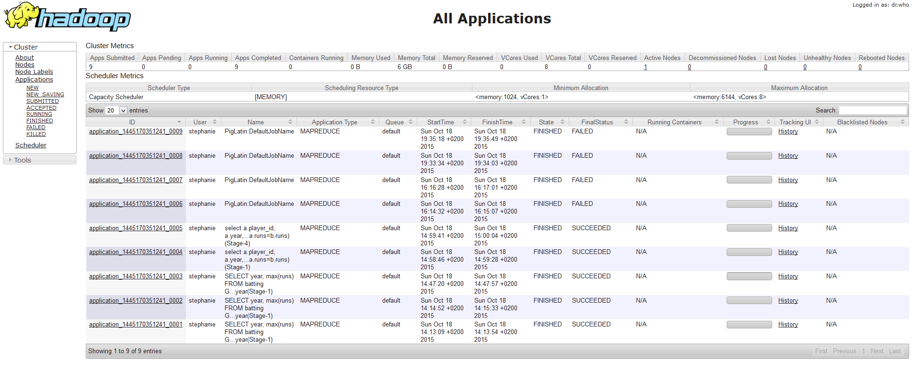

Web UIs¶
Namenode Web UI:¶
Default port: 50070 (50470 for https)
The port can be configured with the dfs.namenode.http-address property of the hdfs-site.xml configuration file.
The Web Interface provides information on the Namenode and the HDfS as well. It provides also some utilities like file and logs browsing.

Datanodes Web UI:¶
Default port: 50075 (50475 for https)
The port can be configured with the dfs.namenode.http-address property in the hdfs-site.xml configuration file.
Some useful entrypoints:
/blockScannerReport : datanode block checks report
/logLevel : log4j logging levels form. This is similar to hadoop daemonlog utility
/stacks : Stack traces for all threads
/metrics?format=json : Metrics for the server
YARN Web UI¶
Default Port: 8042
The port can be configured with the yarn.resourcemanager.webapp.address property of the yarn-site.xml configuration file.
The Resource Manager Web interface provides cluster information on applications and scheduler.

Daemon Logs¶
Each daemon writes its own logs.
The logs location can be configured in the hadoop|yarn|mapred.env files.
These logs contains useful information on possible slowness, connectivity issues, platform bugs, etc.
The log location will be reported in the console when daemons are launches (just replace .out by .log).
$ hadoop-daemon.sh start namenode
starting namenode, logging to /var/log/hadoop/hdfs/hadoop-hdfs-namenode-hadoop.out
$ hadoop-daemon.sh start datanode
starting datanode, logging to /var/log/hadoop/hdfs/hadoop-hdfs-datanode-hadoop.out
The job client¶
A mapreduce job client set up an application context (local files, jar, command, etc.) and prepare the very first container that will run the Application Master service in charge of negociating resources from the Resource Manager and work with the NodeManagers to execute and monitor container.
A mapreduce job application context is described on HDFS in the /user/<user_name>/.staging directory. The job client creates job.xml, job.<timestamp>.conf.xml containing all the hadoop parameters used to execute the job and jar files used in the hadoop jar command and then used by all the containers to execute the job.
The following command runs the sleep example with one mapper and one reducer:
$ yarn jar /usr/hdp/current/hadoop-mapreduce-client/hadoop-mapreduce-client-jobclient.jar sleep -m 1 -r 1 -mt 6000000
The information collected by the job client from the Application Master (through the Resource Manager) will be reported back to the console.
$ hdfs dfs -ls /user/client/.staging/job_1445722923719_0001
Found 6 items
-rw-r--r-- 10 client supergroup 1533962 2015-10-24 23:42 /user/client/.staging/job_1445722923719_0001/job.jar
-rw-r--r-- 10 client supergroup 151 2015-10-24 23:42 /user/client/.staging/job_1445722923719_0001/job.split
-rw-r--r-- 2 client supergroup 19 2015-10-24 23:42 /user/client/.staging/job_1445722923719_0001/job.splitmetainfo
-rw-r--r-- 2 client supergroup 100169 2015-10-24 23:42 /user/client/.staging/job_1445722923719_0001/job.xml
-rw-r--r-- 2 client supergroup 12665 2015-10-24 23:43 /user/client/.staging/job_1445722923719_0001/job_1445722923719_0001_1.jhist
-rw-r--r-- 2 client supergroup 119192 2015-10-24 23:43 /user/client/.staging/job_1445722923719_0001/job_1445722923719_0001_1_conf.xml
To kill the job, find the running job id with the mapred job -list command, then use mapred job -kill job_1445722923719_0001
The Application Master¶
How it works¶
The Application Master is the actual owner of the job.
The Application Master service is in charge of negociating resources from the Resource Manager and works with the NodeManagers to execute and monitor job containers.
The client submits the application and the Application Master specifications to the RM wich will negociate the NodeManager in which the Application Master will be launched.
The NodeManager generates shell script in the local application cache which are used to execute the application master container.
The application master server container directory is located in the yarn.nodemanager.local-dirs directory defined in yarn-site.xml.
$ ls -al usercache/client/appcache/application_1445722923719_0001/container_1445722923719_0001_01_000001
total 56
drwx--x--- 4 yarn yarn 4096 Oct 25 00:47 .
drwx--x--- 6 yarn yarn 4096 Oct 25 00:47 ..
-rw-r--r-- 1 yarn yarn 12 Oct 25 00:47 .container_tokens.crc
-rw-r--r-- 1 yarn yarn 16 Oct 25 00:47 .default_container_executor.sh.crc
-rw-r--r-- 1 yarn yarn 16 Oct 25 00:47 .default_container_executor_session.sh.crc
-rw-r--r-- 1 yarn yarn 36 Oct 25 00:47 .launch_container.sh.crc
-rw-r--r-- 1 yarn yarn 105 Oct 25 00:47 container_tokens
-rwx------ 1 yarn yarn 717 Oct 25 00:47 default_container_executor.sh
-rwx------ 1 yarn yarn 663 Oct 25 00:47 default_container_executor_session.sh
lrwxrwxrwx 1 yarn yarn 105 Oct 25 00:47 job.jar -> /srv/hadoop_data/yarn/local/usercache/client/appcache/application_1445722923719_0001/filecache/10/job.jar
lrwxrwxrwx 1 yarn yarn 105 Oct 25 00:47 job.xml -> /srv/hadoop_data/yarn/local/usercache/client/appcache/application_1445722923719_0001/filecache/13/job.xml
drwxr-xr-x 2 yarn yarn 4096 Oct 25 00:47 jobSubmitDir
-rwx------ 1 yarn yarn 3490 Oct 25 00:47 launch_container.sh
drwx--x--- 2 yarn yarn 4096 Oct 25 00:47 tmp
NOTE: job.jar is only a soft link that points to the actual job.jar in the applications filecache directory. This is how yarn handles distributed cache for containers.
Once launched, The AM communicate with RM to negociate appropriate resource containers according to its need. The Scheduler (in the Resource Manager) responds to this request by granting a container.
After allocation, AM communicate with the Node Managers to launch container application on them.
The container is the resource allocation and grants an application to use a specific amount of resources (memory, cpu, etc.) on a specific host.
The client through the RM can communicate with its own AM to get status, progress updates, etc.
Once the application is complete, the Application Master deregisters with the Resource Manager and shuts down, allowing its own container to be repurposed.
MapReduce Containers¶
During application code execution within a container, the resulting logs are located in the yarn.nodemanager.log-dirs directory (syslog, stderr, stdout).
If a map or reduce task stay stucked, the syslog and stderr files are a good place to check.
Once the job has completed the NodeManager will keep the log for each container for yarn.nodemanager.log.retain-seconds.
$ find application_1445722923719_0002/ -print
application_1445722923719_0002/
application_1445722923719_0002/container_1445722923719_0002_01_000001
application_1445722923719_0002/container_1445722923719_0002_01_000001/stdout
application_1445722923719_0002/container_1445722923719_0002_01_000001/stderr
application_1445722923719_0002/container_1445722923719_0002_01_000001/syslog
application_1445722923719_0002/container_1445722923719_0002_01_000002
application_1445722923719_0002/container_1445722923719_0002_01_000002/stdout
application_1445722923719_0002/container_1445722923719_0002_01_000002/stderr
application_1445722923719_0002/container_1445722923719_0002_01_000002/syslog
To debug failed tasks, set the mapreduce.task.files.preserve.failedtasks property in the mapred-site.yml file to true since it allows to leave "dead" files.
For more information on debugging see How to Debug Map/Reduce Programs
Note:
The log aggregation feature allows Hadoop to store the application logs in HDFS.
This feature can be activated with the yarn.log-aggregation-enable property set to true in the yarn-site.xml file.
The logs will be located at hdfs:///logs/userlogs/<user_name>/<app_id>. To access them use the following command line:
$ yarn logs -applicationId <applicationId> # Read Application logs
Note:
Hdfs default configuration
MapReduce default configuration
Yarn default configuration